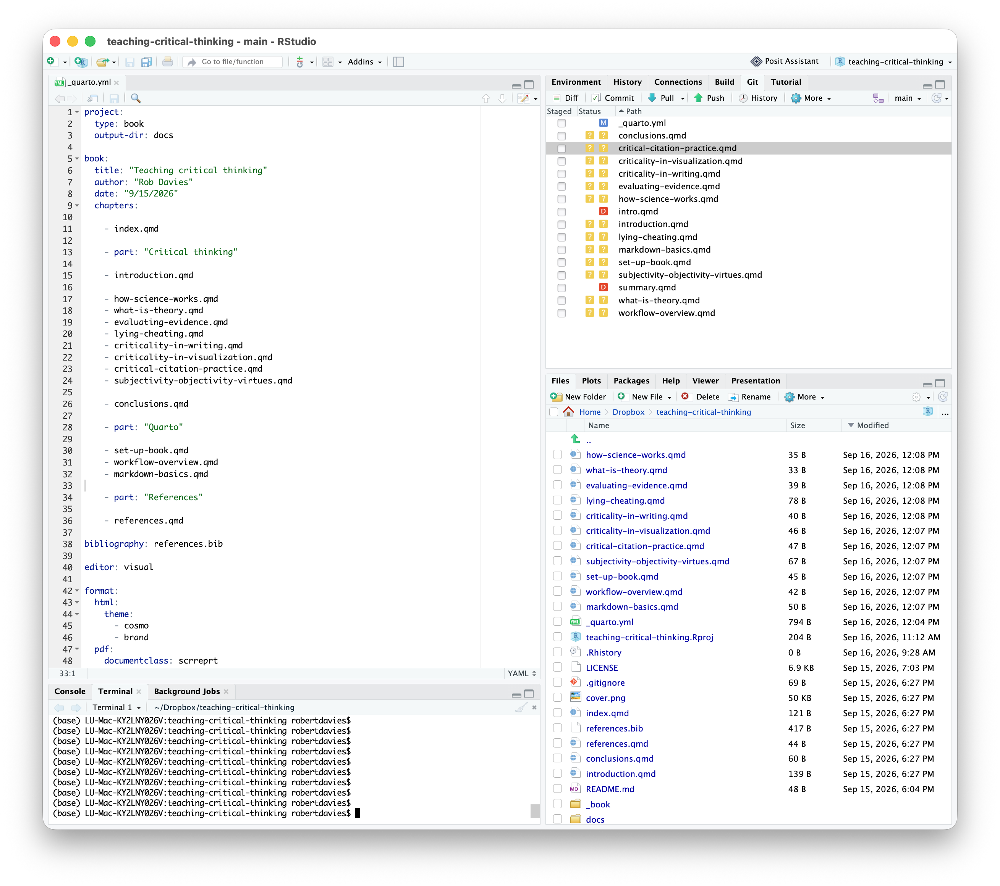
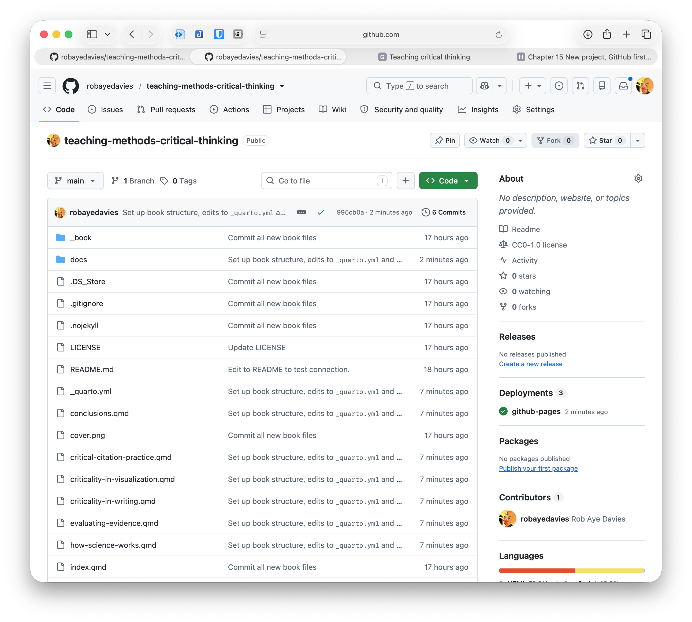
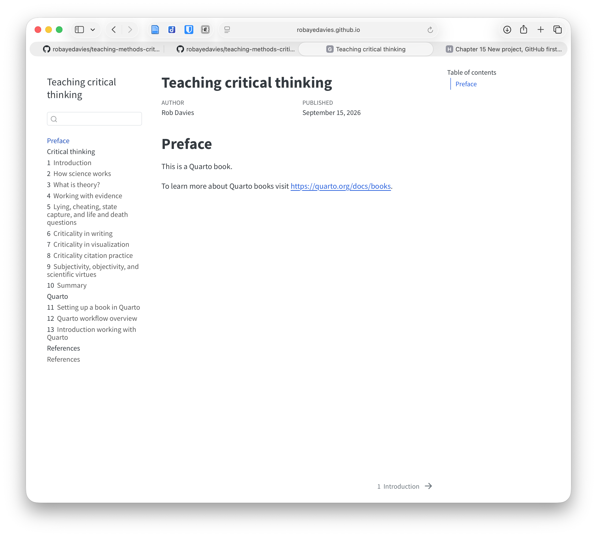

---
title: "[quarto file name.qmd]"
editor: visual
---13 Introduction working with Quarto
13.1 Organizing a book into parts and chapters
I have a rough idea in mind for a draft structure of parts and chapters. The book will be split into two parts:
- Content for teaching and learning, focused on critical thinking;
- Self-documenting writing and producing the book in Quarto.
I’ll edit the yaml to add in the parts I’m thinking about right now.
- I’ll also create a bunch of empty .qmd files with the titles of the chapters I’m thinking about. This is so that the index process associated with the yaml can work without error:
- You create a new .qmd by going to: RStudio/File/New File/
Quarto Document ...– and clicking on theCreate Empty Documentat the bottom of the dialogue box. - When you do this, each new empty file will be created with a minimal yaml section e.g.:
To reduce redundancy, I’m going to delete the
editor: visualbit from each file. I will add it to_quarto.ymlso that this property is then inherited by every book chapter .qmd.I also need to rename the dummy files created when I first created the book. I can do this directly in the file folder.
intro.qmd -> introduction.qmd summary.qmd -> conclusions.qmd
The _quarto.yml now looks like this:
project:
type: book
output-dir: docs
book:
title: "Teaching critical thinking"
author: "Rob Davies"
date: "9/15/2026"
chapters:
- index.qmd
- part: "Critical thinking"
- introduction.qmd
- how-science-works.qmd
- what-is-theory.qmd
- evaluating-evidence.qmd
- lying-cheating.qmd
- criticality-in-writing.qmd
- criticality-in-visualization.qmd
- critical-citation-practice.qmd
- subjectivity-objectivity-virtues.qmd
- conclusions.qmd
- part: "Quarto"
- set-up-book.qmd
- workflow-overview.qmd
- markdown-basics.qmd
- part: "References"
- references.qmd
bibliography: references.bib
editor: visual
format:
html:
theme:
- cosmo
- brand
pdf:
documentclass: scrreprtAnd the RStudio window shows the new files in both the
Filessub window or tab, and in theGittab.I commit the changes with the message: Set up book structure, edits to
_quarto.ymland create empty .qmd files to hold content for new chapters.I check the preview in terminal with
quarto preview. Looks good.I render the book with
quarto render.
The process of rendering changes the contents of the folder. We see the creation of new .html files, corresponding to the new chapters. We see deletion of the html files corresponding to the .qmd files I renamed.

I first stage the changes: in RStudio/Git under the
Stagedcolumn, click on the check box at the top of the lift, press and hold SHIFT, then click on the check box at the bottom of the list, to stage all file entries.I commit the changes.
I push the changes. From the moment I push the changes, if I go to the web view of my repository, I should be able to see that the deployment to GitHub Pages has been refreshed, and the resulting downstream web page should represent the revised book structure.
It does.

- The output looks ok in Safari:

13.2 Writing content: adding text, adding sections, adding callout boxes, and inserting images
13.2.1 Adding text
The basics of adding text is covered here:
https://quarto.org/docs/authoring/markdown-basics.html#links-images
And most of the time, we are writing stuff like this:
### Adding text
The basics of adding text is covered here:
<https://quarto.org/docs/authoring/markdown-basics.html#links-images>13.2.2 Adding sections
Most of the time, we are going to divide our text into sections or into callout boxes.
In Quarto, we use # marks to identify section headers, varying the number of # to indicate the level of section header.
# Heading 1
## Heading 2
### Heading 3
#### Heading 4
##### Heading 5
###### Heading 6Quarto will automatically number the sections, and number the sections, unless we specify otherwise.
We can tell Quarto to do this explicitly in the book yaml or in a chapter yaml. We can edit the book yaml _quarto.yml to be explicit about the behaviour we want.
format:
html:
theme:
- cosmo
- brand
number-sections: true
pdf:
documentclass: scrreprt
number-sections: true13.2.2.1 Cross-referencing sections
Cross references are an important facet of writing Quarto documents. We can add code to enable automatic referencing of equations, figures, images, sections and tables.
https://quarto.org/docs/authoring/cross-references.html#sections
Let’s say we have a section ### Inserting images, we can refer to the section as follows:
### Inserting images {#sec-inserting-images}This means that we can then write the code:
@sec-inserting-images- to get this: Section 13.2.4.
13.2.3 Adding callout boxes
It is often helpful to use callout boxes. We probably ought to be systematic or consistent about this across chapters (and across the contributions of different authors).
You can find information about callout boxes here:
https://quarto.org/docs/authoring/cross-references.html#callouts
We often want to use one of the following variety of callout boxes – notice that we can label boxes for cross-referencing:
::: {#tip-example .callout-tip}
## Cross-Referencing a Tip
Add an ID starting with `#tip-` to reference a tip.
:::
See @tip-example...
Tip 13.1: Cross-Referencing a Tip
Add an ID starting with #tip- to reference a tip.
See Tip 13.1…
::: {#nte-example .callout-note}
## Cross-Referencing a note
Add an ID starting with `#nte-` to reference a note.
:::
See @nte-example...
Note 13.1: Cross-Referencing a note
Add an ID starting with #nte- to reference a note.
See Note 13.1…
::: {#wrn-example .callout-warning}
## Cross-Referencing a warning
Add an ID starting with `#wrn-` to reference a tip.
:::
See @wrn-example...
Warning 13.1: Cross-Referencing a warning
Add an ID starting with #wrn- to reference a tip.
See Warning 13.1…
::: {#imp-example .callout-important}
## Cross-Referencing a important
Add an ID starting with `#imp-` to reference something important.
:::
See @imp-example...
Important 13.1: Cross-Referencing a important
Add an ID starting with #imp- to reference something important.
See Important 13.1…
::: {#cau-example .callout-caution}
## Cross-Referencing a caution
Add an ID starting with `#cau-` to reference a caution.
:::
See @cau-example...
Caution 13.1: Cross-Referencing a caution
Add an ID starting with #cau- to reference a caution.
See Caution 13.1…
Most usefully, we can create boxes that are collapsible and that we can cross-reference:
::: {#nte-optional-command .callout-note collapse="true"}
## Optional heading
Your content here — this could include a code chunk, plain text, or both.
:::
See @nte-optional-command for the optional command.
Note 13.2: Optional heading
Your content here — this could include a code chunk, plain text, or both.
See Note 13.2 for the optional command.
13.2.4 Inserting images
I am going to do this by example through editing the Quarto how-to files, to make this book building process self-documenting.
If you insert an image in a .qmd, you use syntax like this:
- where
[Caption]the text in square brackets is the caption text, and(elephant.png)the file name in round brackets identifies the image file.
https://quarto.org/docs/authoring/markdown-basics.html#links-images
13.2.4.1 Working with a set of multiple images so that you need to organize them in a folder and locate them in the Quarto image insertion syntax
I might have to work with multiple image files, so I will collect them in a single folder.
I am going to insert images showing screen shots of the workflow elements. I think it’ll be easier to do this, and tidier, if I locate all the image .png files in a single /files/ folder in the Quarto book working directory.
If I do this, then identifying the file requires me to use syntax to identify both the image and its location (file path):
/files/– tells Quarto that the .png is located in thefilessubfolder.- the
/.../use of forward slashes before and after the folder name tells Quarto that the folder is (with the first/...) located at the top level of the book project folder (the project root).
Typically, we are going to use syntax like this with a folder structure like this:
my-book/
├── _quarto.yml
├── index.qmd
├── chapter1.qmd
├── chapter2/
│ └── chapter2.qmd
└── files/
└── elephant.png- I create the new folder:
filesin the book project folder. - I copy the screen shot .png files into the
/files/folder. - I commit the change: “Create a new files folder, and copy in screen shot images.”
- I push the changes though this may take a while.
Note that if I wanted to organize the files to a sub-folder (not project root) then provided that folder lives at the same level as the .qmd referencing the image file, I would use this syntax:  – omitting the first forward slash.
13.2.4.2 Editing the image insertion syntax so that you have a caption, you set up figure referencing, you edit the sizing and you specify location
Most of the time, you are going to want to do five things when you include an image in a .qmd file. You will need to:
- Identify the file, and identify its location to Quarto;
- Add a caption;
- Add a hidden figure label so that you can refer to the image later;
- Specify the size of the output image;
- Add alt text (for html output) to enable accessibility for people using screen readers.
We have seen that you use syntax like this:
- to
![...]add caption text; - to
(/files/...)identify the location of the folder holding the image file, by naming the folderfiles, and specifying its location relative to the root (the top level) of the project folder/.../; - to
...(...rstudio-edits-changes-git-files.png)identify the file holding the image we want to present.
If we use the following code, we can specify further information:
{#fig-rstudio-edits-changes-git-files width=60% fig-align="center" fig-alt="RStudio Git Window listing of file changes"}In the {...} curly brackets, located immediately after the image file () we can specify:
fig-...a figure label;width = ...image relative size information;fig-align = ...alignment information;fig-alt="..."alt text to enable accessible reading of our webpage.
Notice that different elements are separated by a single space inside {...}.
I can reference a figure using this cross-reference code:
@fig-rstudio-edits-changes-git-filesProvided Quarto can find the label fig-rstudio-edits-changes-git-files, using this code will let me say “I am referring to this Figure 13.1”. Here, Quarto replaces the code with an automatically numbered reference (and in html, live link to the image).